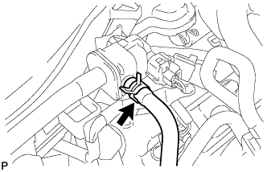

СИСТЕМА СНИЖЕНИЯ ТОКСИЧНОСТИ ОТРАБОТАВШИХ ГАЗОВ (для моделей без вспомогательной системы подачи воздуха в нейтрализатор) > ПРОВЕРКА БЕЗ СНЯТИЯ С АВТОМОБИЛЯ |
| 1. ПРОВЕРЬТЕ ЭЛЕКТРОВАКУУМНЫЙ КЛАПАН ПРОДУВКИ |
Подсоедините портативный диагностический прибор к DLC3.
Снимите декоративную крышку V-образного двигателя (Нажмите здесь).
|  |
Отсоедините шланг (подсоединенный к адсорберу) от электровакуумного клапана продувки.
Запустите двигатель и включите портативный диагностический прибор.
Войдите в следующие меню: Powertrain / Engine and ECT / Active Test / Activate the VSV for EVAP Control.
| Режим работы прибора | Заданные условия |
| EVAP VSV: OFF (ВЫКЛ) | Нет всасывания в электровакуумный клапан продувки |
| EVAP VSV: ON (ВКЛ) | Есть всасывание в электровакуумный клапан продувки |
Подсоедините шланг (подсоединенный к адсорберу) к электровакуумному клапану продувки.
Установите декоративную крышку V-образного двигателя (Нажмите здесь).
| 2. ПРОВЕРЬТЕ ЧАСТОТУ ВРАЩЕНИЯ КОЛЕНЧАТОГО ВАЛА, ПРИ КОТОРОЙ ПРОИСХОДИТ ОТСЕЧКА ТОПЛИВА |
Запустите и прогрейте двигатель.
Увеличьте частоту вращения коленчатого вала двигателя, по крайней мере, до 3500 об/мин.
Используя звуковой стетоскоп, проверьте шум при работе форсунки.
При отпускании педали акселератора звук работы форсунки должен кратковременно прекратиться, после чего возобновиться.
Если результат проверки не отвечает требованиям, проверьте форсунку, проводку и ЕСМ.
| 3. ВИЗУАЛЬНО ПРОВЕРЬТЕ ШЛАНГИ, СОЕДИНЕНИЯ И ПРОКЛАДКИ |
Убедитесь в отсутствии трещин, утечек и повреждений.
| 4. ПРОВЕРЬТЕ ШЛАНГИ И СОЕДИНИТЕЛИ |
Убедитесь в отсутствии ослабленных соединений, значительных перегибов и повреждений.
| 5. ПРОВЕРЬТЕ ТОПЛИВНЫЙ БАК В СБОРЕ |
Убедитесь в отсутствии деформации, трещин и следов утечки топлива.
| 6. ПРОВЕРЬТЕ РАБОТУ ВСПОМОГАТЕЛЬНОЙ СИСТЕМЫ ПОДАЧИ ВОЗДУХА В НЕЙТРАЛИЗАТОР |
Запустите и прогрейте двигатель.
Выключите зажигание.
Подсоедините портативный диагностический прибор к DLC3.
Включите зажигание (IG) и портативный диагностический прибор.
Войдите в следующие меню: Powertrain / Engine and ECT / Utility / Air injection check / Manual Mode / AIR PUMP 1: ON (ВКЛ), ASV1: OPEN, AIR PUMP 2: ON (ВКЛ), ASV2: OPEN и AIR PUMP 1: OFF (ВЫКЛ), ASV1: CLOSE, AIR PUMP 2: OFF (ВЫКЛ), ASV2: CLOSE.
Запустите двигатель.
Выполняйте вмешательство в работу системы AIR, когда двигатель работает на холостом ходу.
Убедитесь в том, что состояние воздушного нагнетателя (AIR PUMP), состояние ASV и давление в канале системы AIR (PRESSURE), отображаемые на экране портативного диагностического прибора, соответствуют значениям, указанным в таблице ниже.
| Режим работы прибора | ВОЗДУШНЫЙ НАГНЕТАТЕЛЬ | ASV | PRESSURE*1 | PULSATION*2 |
| ВОЗДУШНЫЙ НАГНЕТАТЕЛЬ: ON (ВКЛ), ASV: ОТКРЫТО | ВКЛ | ON (ВКЛ) | 2,4 кПа или выше | 20 кПа или выше |
| ВОЗДУШНЫЙ НАГНЕТАТЕЛЬ: OFF (ВЫКЛ), ASV: ЗАКРЫТО | OFF (ВЫКЛ) | OFF (ВЫКЛ) | Менее 2,4 кПа | Менее 30 кПа |
Выключите зажигание.